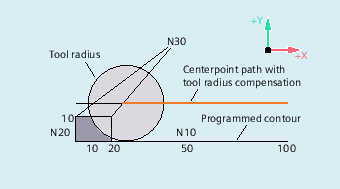

In certain special geometrical situations, special extended approach and retraction strategies, compared with the previous implementation with activated collision detection for the approach and retraction block, are required in order to activate or deactivate tool radius compensation. A collision detection can result, for example, in a section of the contour not being completely machined, see following figure:
Retraction behavior with G460
G460
G461
G462
| As previously (activation of the collision detection for the approach and retraction block). |
| Insertion of a circle in the TRC block, if it is not possible to have an intersection whose center point is in the end point of the uncorrected block, and whose radius is the same as the tool radius. Up to the intersection, machining is performed with an auxiliary circle around the contour end point (i.e. up to the end of the contour). |
| Insertion of a circle in the TRC block, if it is not possible to have an intersection; the block is extended by its end tangent (default setting). Machining is performed up to the extension of the last contour element (i.e. until shortly before the end of the contour). |
| Note |
The approach behavior is symmetrical to the retraction behavior. The approach/retraction behavior is determined by the state of the G command in the approach/retraction block. The approach behavior can therefore be set independently of the retraction behavior. |
The following example describes only the situation for deactivation of tool radius compensation: The behavior for approach is exactly the same.
| Program code | Comment |
|---|---|
| G42 D1 T1 | ; Tool radius 20 mm |
| ... | |
| G1 X110 Y0 | |
| N10 X0 | |
| N20 Y10 | |
| N30 G40 X50 Y50 |
| Program code | Comment |
|---|---|
| N10 $TC_DP1[1,1]=120 | ; Milling tool type |
| N20 $TC_DP6[1,1]=10 | ;Tool radius |
| N30 X0 Y0 F10000 T1 D1 | |
| N40 Y20 | |
| N50 G42 X50 Y5 G461 | |
| N60 Y0 F600 | |
| N70 X30 | |
| N80 X20 Y-5 | |
| N90 X0 Y0 G40 | |
| N100 M30 |
See also:
Soft approach and retraction with extended retraction strategies (G460, G461, G462): More information
Soft approach and retraction (G140 to G143, G147, G148, G247, G248, G347, G348, G340, G341, DISR, DISCL, DISRP, FAD, PM, PR):